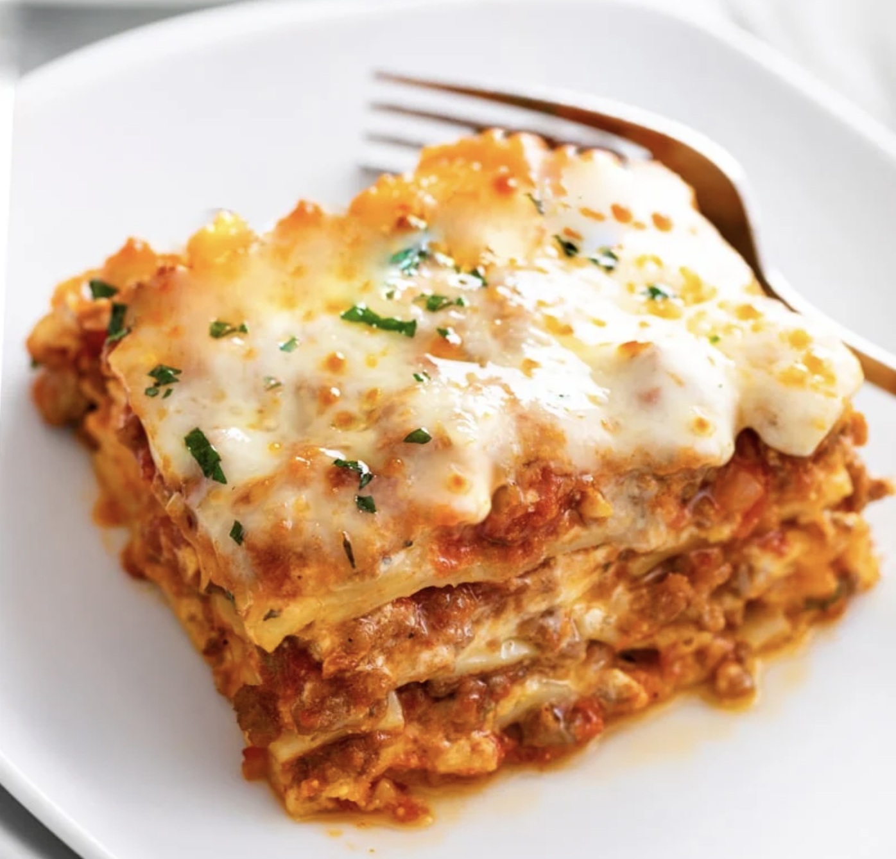

Back

Ingredients
- 1 lb ground beef
- 1 onion, chopped
- 2 cloves garlic, minced
- 1 can tomato sauce
- 1 can diced tomatoes
- 1 tsp sugar
- 1 tsp dried basil leaves
- 1/2 tsp fennel seeds
- 1/2 tsp Italian seasoning
- 1 tbsp salt
- 1/4 tsp ground black pepper
- 4 cups ricotta cheese
- 1 egg
- 1/2 tsp salt
- 3/4 lb mozzarella cheese, sliced
- 3/4 cup grated Parmesan cheese
- 12 lasagna noodles
Instructions
- Preheat oven to 375 degrees F (190 degrees C).
- In a large skillet, cook and stir ground beef, onion, and garlic in oil until brown. Add tomato sauce, tomatoes, sugar, basil, fennel seeds, Italian seasoning, 1 tablespoon salt, and pepper. Simmer, covered, for about 1 1/2 hours, stirring occasionally.
- Bring a large pot of lightly salted water to a boil. Cook lasagna noodles in boiling water for 8 to 10 minutes. Drain noodles, and rinse with cold water. In a mixing bowl, combine ricotta cheese with egg, remaining salt, and 2 cups of the mozzarella cheese and 1/2 cup Parmesan cheese.
- To assemble, spread 1 1/2 cups of meat sauce in the bottom of a 9x13 inch baking dish. Arrange 6 noodles lengthwise over meat sauce. Spread with one half of the ricotta cheese mixture. Top with a third of mozzarella cheese slices. Spoon 1 1/2 cups meat sauce over mozzarella, and sprinkle with 1/4 cup Parmesan cheese. Repeat layers, and top with remaining mozzarella and Parmesan cheese. Cover with foil: to prevent sticking, either spray foil with cooking spray, or make sure the foil does not touch the cheese.
- Bake in preheated oven for 25 minutes. Remove foil, and bake an additional 25 minutes. Cool for 15 minutes before serving.